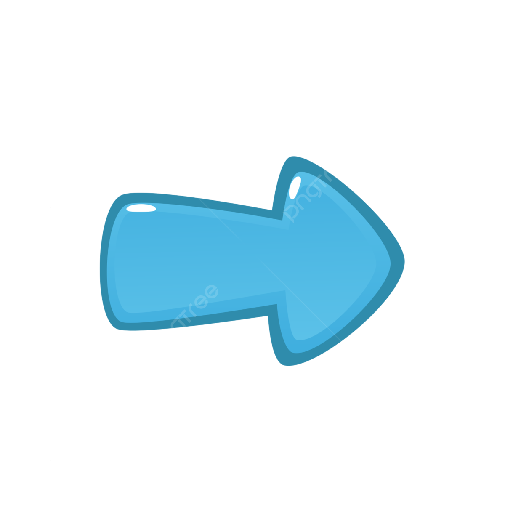

CANSERBERO
¿Quien es CANSERBERO?
Canserbero dejó una huella significativa en la música urbana en América Latina con su estilo único
y letras profundas. Comenzó a destacarse en la escena del rap, combinando su estilo distintivo con una profunda reflexión sobre temas sociales y
personales. Su primer álbum, *"Cáncer"*, marcó su entrada en la música, abordando cuestiones como la desigualdad y las luchas internas con una calidad
lírica que capturó la atenció del público. Su segundo álbum, *"Muerte"*, es ampliamente considerado su obra maestra, mostrando una evolución en
su estilo y un enfoque aún más filosófico sobre la vida, la muerte y la sociedad. En este álbum, Canserbero profundizó en temas recurrentes como
la corrupción, la violencia y la búsqueda de justicia social, desafiando a sus oyentes a reflexionar sobre la realidad que les rodea. A pesar de
su trágica muerte, su legado sigue vivo a través de su música, inspirando a nuevos artistas y resonando con sus seguidores. Canserbero es recordado por sucapacidad
para fusionar el rap con una reflexión profunda y crítica sobre la condición humana, dejando una marca indeleble en la música de su tiempo.
¿Quien es tyrone ?
Tyrone González, conocido artísticamente como Canserbero, nació el 11 de marzo de 1988 en Caracas, Venezuela. Desde joven, mostró
un interés por la música y la expresión artística, lo que eventualmente lo llevó a convertirse en una figura destacada en el mundo
del rap. A lo largo de su vida, Canserbero enfrentó diversas dificultades personales y sociales, las cuales reflejaron su profunda
introspección y sus luchas internas.
Además de su carrera musical, Tyrone González fue conocido por su carácter introspectivo y por sus reflexiones sobre la vida y la sociedad.
A pesar de su éxito en la música, su vida estuvo marcada por desafíos personales que se reflejaron en su arte. Canserbero falleció el 20 de enero de 2015,
dejando un impacto duradero en quienes lo conocieron y en sus seguidores. Su vida y su legado siguen siendo recordados por aquellos que fueron tocados por
su arte y su visión del mundo.
Características de la Música de Canserbero
- Letras Profundas: Sus canciones suelen abordar temas complejos como la desigualdad, la corrupción y las luchas personales, con una profundidad emocional y filosófica.
- Crítica Social: A través de sus letras, Canserbero ofrece una crítica aguda sobre la sociedad y las instituciones, desafiando a los oyentes a reflexionar sobre el estado del mundo.
- Estilo Introspectivo: La música de Canserbero a menudo refleja una introspección profunda, explorando cuestiones existenciales y el sentido de la vida.
- Innovación en el Rap: Su enfoque innovador combina elementos tradicionales del rap con una narrativa poética y compleja, destacándose por su habilidad para fusionar estilos musicales.
Para ver algunos álbumes, precione la flechita
